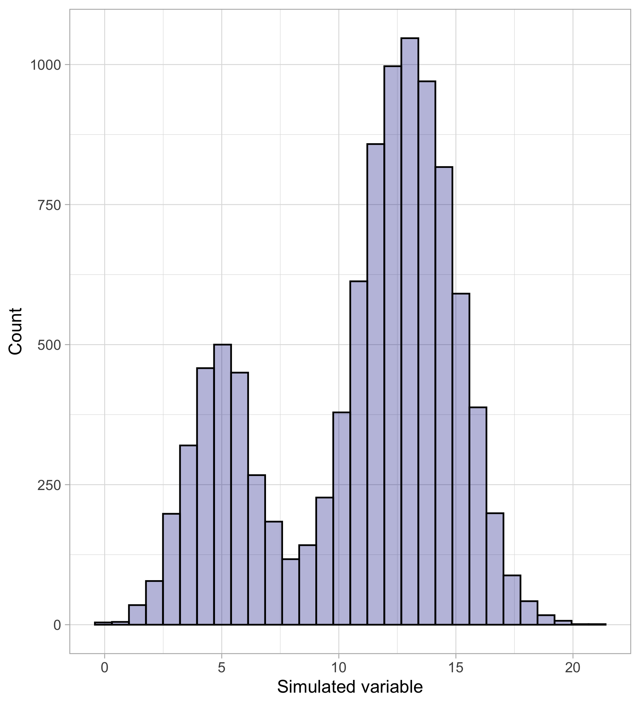
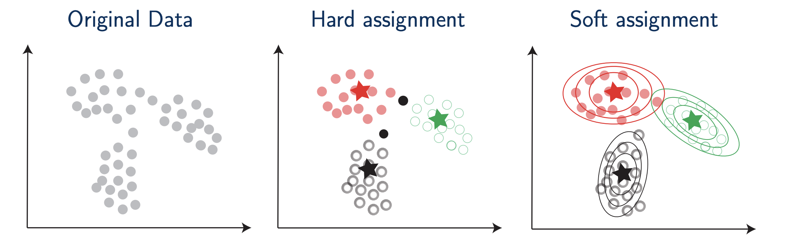
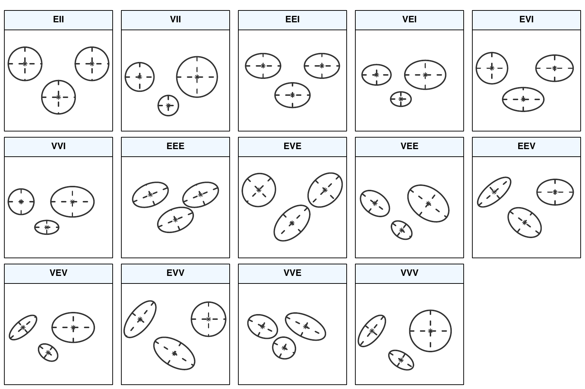
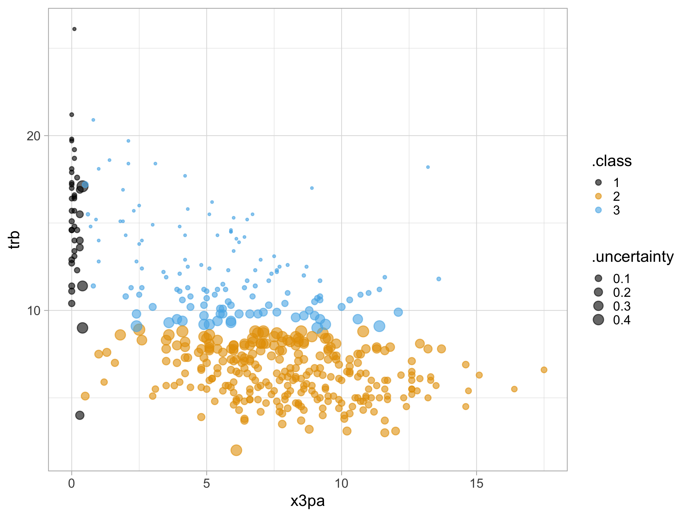
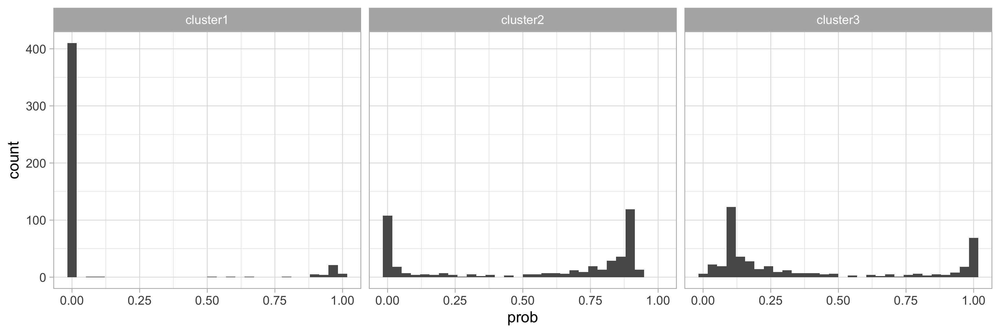
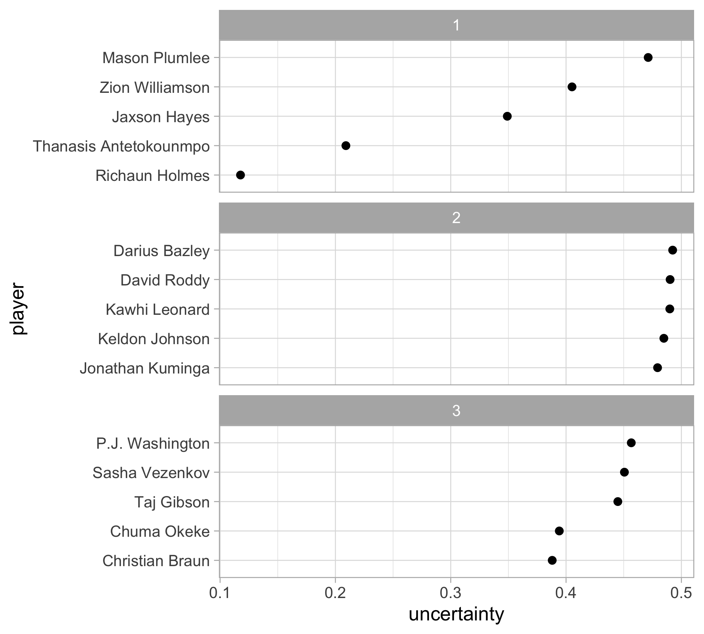
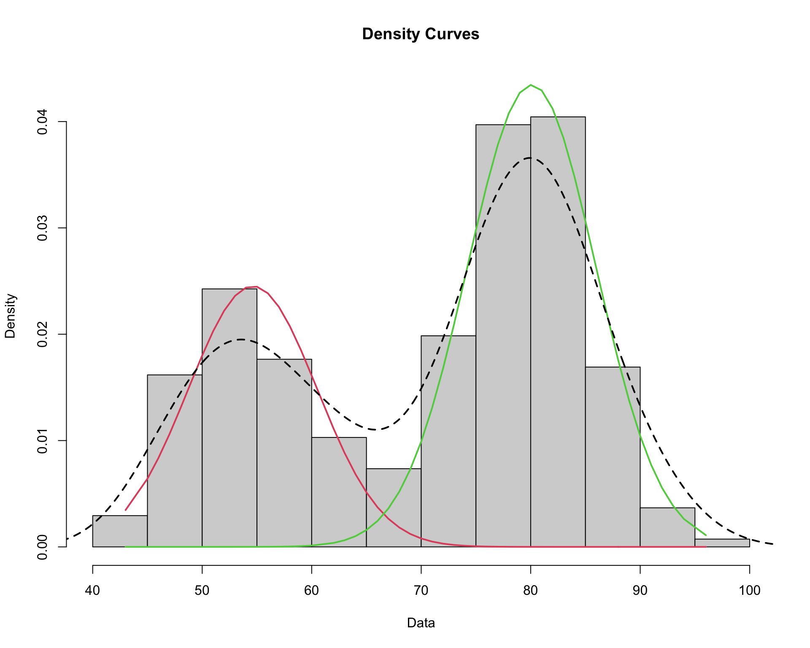
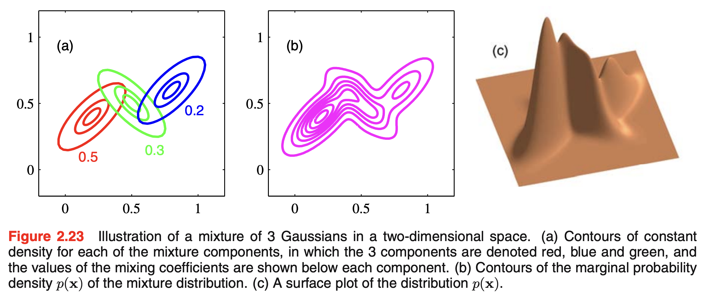

Unsupervised learning: Gaussian mixture models
CMSACamp 2026
Department of Statistics & Data Science
Carnegie Mellon University
Background
Previously: clustering
Clustering goal: partition observations into subgroups/cluster, where observations within a cluster are more similar than observations between clusters
- \(k\)-means and hierarchical clustering output hard assignments, where observations are only assigned to one cluster
What about soft assignments that incorporate uncertainty into the clustering results?
Assigns each observation a probability of belonging to a cluster
Incorporate statistical modeling into clustering
Welcome to the world of mixture models!

Motivating figure

Model-based (parametric) clustering
- Moves beyond hard cluster assignments and allows for flexible and probabilistic soft assignments
Key idea: data are considered as coming from a mixture of underlying probability distributions
Assume data are sample from a population with underlying density
Estimate density
Use its characteristics to determine clustering structure
Most popular method: Gaussian mixture model (GMM)
Each observation is assumed to be distributed as one of \(K\) multivariate normal distributions
\(K\) is the number of clusters/components
- Other variations: skewed normal, t-distributions, beta, etc. (as long as it can be estimated)
Mixture models
Mixture models in general
We assume the distribution \(f(x)\) is a mixture of \(K\) component (cluster) distributions:
\[\displaystyle f(x) = \sum_{k=1}^K \tau_k f_k(x),\]
where \(\tau_k\) are mixture proportions (or weights), with \(\tau_k \ge 0\) and \(\sum_{k=1}^K \tau_k = 1\)
This is a data generating process, meaning to generate a new point:
- Pick a distribution/component among our \(K\) options, by introducing a new categorical variable saying which group the new point is from:
\[ \displaystyle z \sim \text{Multinomial}(\tau_1, \dots, \tau_K), \]
- Generate an observation \(x\) with that distribution/component: \(x \mid z \sim f_z\)
So, what do we use for each \(f_k\)?
Assume a parametric mixture model (with parameters \(\theta_k\) for the \(k\)th component):
\[ f(x) = \sum_{k=1}^K \tau_k f_k(x; \theta_k) \]
Most often the mixture component densities are assumed to be Gaussian/Normal with parameters \(\theta_k = \{\mu_k, \sigma_k^2\}\). In the 1D case:
\[ \displaystyle f_k(x; \theta_k) = \mathcal{N}(x; \mu_k, \sigma^2_k) = \frac{1}{\sqrt{2\pi \sigma_k^2}} \exp \left(- \frac{(x - \mu_k)^2}{2 \sigma^2_k} \right) \]
So, we need to:
Choose the number of components (clusters) \(K\)
Estimate the weights \(\tau_1, \dots, \tau_K\) and the parameters \(\theta_1,\dots,\theta_K\)
Let’s pretend we only have one component…
- Suppose we have \(n\) observations from a single Normal distribution
- We estimate the distribution parameters using the likelihood function (i.e., the joint probability/density of observing the data given the parameters):
\[ \mathcal{L}(\mu, \sigma^2 \mid x_1, \dots, x_n) = f(x_1, \dots, x_n \mid \mu, \sigma^2) = \prod_{i = 1}^n \frac{1}{\sqrt{2 \pi \sigma^2}} \exp \left(- \frac{(x - \mu)^2}{2 \sigma^2} \right) \]
We can compute the maximum likelihood estimators (MLEs) for \(\mu\) and \(\sigma^2\):
\(\displaystyle \hat{\mu}_{MLE} = \frac{1}{n} \sum_{i = 1}^n x_i\), aka the sample mean
\(\displaystyle \hat{\sigma}^2_{MLE} = \frac{1}{n} \sum_{i = 1}^n (x_i - \mu)^2\), aka the sample variance (plug in \(\hat{\mu}_{MLE}\))
The problem with more than one component
- We don’t know which component (or cluster) an observation belongs to
If we did know, then we could compute each component’s MLEs as before
But we don’t know because \(z\) is a latent variable. So, what is its distribution given the observed data? Using Bayes Theorem:
\[ \begin{aligned} \displaystyle P(z_i = k \mid x_i) &= \frac{P(x_i \mid z_i = k)P(z_i = k)}{P(x_i)} \\ &= \frac{\pi_k \cdot \mathcal{N}(\mu_k, \sigma^2_k)}{\sum_{k = 1}^K \pi_k \cdot \mathcal{N}(\mu_k, \sigma^2_k)} \end{aligned} \]
- But we do NOT know these parameters!
Expectation-maximization (EM) algorithm
Expectation-maximization (EM) algorithm involves alternating between the following:
Pretending to know the parameters of the components, to estimate the probability each observation belong to each component/cluster
Pretending to know the probability each observation belongs to each group, to estimate the parameters of the components
Concretely:
- We randomly initialize the component parameters (\(\mu_k, \sigma^2_k, \tau_k\)) for each component \(k\)
- Repeat until nothing changes:
Expectation: calculate \(\hat{z}_{ik}\), i.e., the soft membership of observation \(i\) belonging to component/cluster \(k\)
Maximization: re-estimate the model parameters (\(\mu_k, \sigma^2_k, \tau_k\)) for each component/cluster \(k\) that maximize the updated likelihood function that uses \(\hat{z}_{ik}\).
Is this familiar?
In GMMs, we’re essentially:
Guessing how much we think each Gaussian component generates each observation
Pretending to know the parameters to perform maximum likelihood estimation
Instead of assigning each point to a single cluster, we “softly” assign them in GMMs so they contribute fractionally to each cluster
How does this relate back to clustering?
From the EM algorithm: \(\hat{z}_{ik}\) is the soft membership of observation \(i\) belonging to component/cluster \(k\)
We can assign observation \(i\) to the cluster with the largest \(\hat{z}_{ik}\) (\(\text{max}_{k} \hat{z}_{ik}\))
We can measure the cluster assignment uncertainty for observation \(i\) as: \(1 - \text{max}_{k} \hat{z}_{ik}\)
Our parameters determine the type of cluster
In 1D, we only have two options:
Each cluster is assumed to have equal variance (spread): \(\sigma^2_1 = \cdots = \sigma^2_K\)
Each cluster is allowed to have a different variance
But that is only 1D… what happens in multiple dimensions?
Multivariate GMMs
A multivariate GMM assumes the following distribution:
\[ \displaystyle f(x) = \sum_{k = 1}^K \tau_k f_k(x; \theta_k), \]
where \(f_k(x;\theta_k) \sim \mathcal{N}(x; \boldsymbol{\mu}_k, \boldsymbol{\Sigma}_k)\)
That is, each component/cluster is a multivariate normal distribution:
\(\boldsymbol{\mu}_k\) is a \(p\)-dimensional vector of means
\(\boldsymbol{\Sigma}_k\) is a \(p \times p\) covariance matrix – describes the joint variability between pairs of variables
\[ \displaystyle \boldsymbol{\Sigma}_k = \begin{bmatrix} \sigma^2_1 & \sigma_{1,2} & \cdots & \sigma_{1,p} \\ \sigma_{2,1} & \sigma^2_2 & \cdots & \sigma_{2,p} \\ \vdots & \vdots & \ddots & \vdots \\ \sigma_{p,1} & \sigma_{p,2} & \cdots & \sigma^2_p \end{bmatrix} \]
Covariance constraints
\[ \displaystyle \boldsymbol{\Sigma}_k = \begin{bmatrix} \sigma^2_1 & \sigma_{1,2} & \cdots & \sigma_{1,p} \\ \sigma_{2,1} & \sigma^2_2 & \cdots & \sigma_{2,p} \\ \vdots & \vdots & \ddots & \vdots \\ \sigma_{p,1} & \sigma_{p,2} & \cdots & \sigma^2_p \end{bmatrix} \]
As we increase the number of dimensions (\(p\)), model fitting and estimation become increasingly difficult
We can place constraints on multiple aspects of the \(k\) covariance matrices to help:
Volume: size of the clusters (number of observations)
Shape: direction of variance (which variables display more variance)
Orientation: aligned with axes (low covariance) versus tilted (due to relationships between variables)
Covariance constraints
Three letters in model name denote (in order) the volume, shape, and orientation across clusters

Covariance constraints: summary table
| Model | Distribution | Volume | Shape | Orientation |
|---|---|---|---|---|
| EII | Spherical | Equal | Equal | — |
| VII | Spherical | Variable | Equal | — |
| EEI | Diagonal | Equal | Equal | Coordinate axes |
| VEI | Diagonal | Variable | Equal | Coordinate axes |
| EVI | Diagonal | Equal | Variable | Coordinate axes |
| VVI | Diagonal | Variable | Variable | Coordinate axes |
| EEE | Ellipsoidal | Equal | Equal | Equal |
| EVE | Ellipsoidal | Equal | Variable | Equal |
| VEE | Ellipsoidal | Variable | Equal | Equal |
| VVE | Ellipsoidal | Variable | Variable | Equal |
| EEV | Ellipsoidal | Equal | Equal | Variable |
| VEV | Ellipsoidal | Variable | Equal | Variable |
| EVV | Ellipsoidal | Equal | Variable | Variable |
| VVV | Ellipsoidal | Variable | Variable | Variable |
How do we decide what constraints to use?
This is a statistical model:
\[ f(x) = \sum_{k = 1}^K \tau_k f_k(x; \theta_k), \quad f_k(x; \theta_k) \sim \mathcal{N}(x; \boldsymbol{\mu}_k, \boldsymbol{\Sigma}_k) \]
So, we can use a model selection procedure for determining which best characterizes the data
One option is the Bayesian Information Criterion (BIC), which is a penalized likelihood measure:
\[ \displaystyle BIC = 2 \log \mathcal{L}(x; \theta) - m \log n \]
where:
\(L(x \mid \theta)\) is likelihood of the considered model
\(m\) is number of parameters (VVV has the most parameters) and \(n\) is number of observations
Note: the BICs are calculated for all candidate models (different combinations of \(K\) and covariance constraints), and we select one final model that gives the optimum BIC value
Example
Data: NBA player statistics per 100 possessions (2023-24 regular season)
Rows: 452
Columns: 33
$ rk <dbl> 1, 2, 3, 4, 5, 6, 7, 9, 10, 11, 12, 13, 14, 16, 17, 19, 20,…
$ player <chr> "Precious Achiuwa", "Bam Adebayo", "Ochai Agbaji", "Santi A…
$ pos <chr> "PF-C", "C", "SG", "PF", "SG", "SG", "C", "PG", "PF", "PF",…
$ age <dbl> 24, 26, 23, 23, 25, 28, 25, 25, 30, 29, 31, 23, 26, 23, 25,…
$ tm <chr> "TOT", "MIA", "TOT", "MEM", "MIN", "PHO", "CLE", "NOP", "MI…
$ g <dbl> 74, 71, 78, 61, 82, 75, 77, 56, 79, 73, 34, 81, 50, 75, 55,…
$ gs <dbl> 18, 71, 28, 35, 20, 74, 77, 0, 10, 73, 0, 0, 50, 75, 55, 1,…
$ mp <dbl> 1624, 2416, 1641, 1618, 1921, 2513, 2442, 1028, 1782, 2567,…
$ fg <dbl> 7.2, 10.9, 5.2, 7.5, 6.1, 6.6, 10.5, 6.8, 5.5, 15.7, 5.0, 9…
$ fga <dbl> 14.4, 21.0, 12.7, 17.2, 13.8, 13.3, 16.6, 16.5, 12.0, 25.6,…
$ fgpercent <dbl> 0.501, 0.521, 0.411, 0.435, 0.439, 0.499, 0.634, 0.412, 0.4…
$ x3p <dbl> 0.8, 0.3, 1.8, 3.2, 3.4, 4.0, 0.0, 3.7, 0.3, 0.6, 0.0, 2.5,…
$ x3pa <dbl> 3.0, 0.9, 6.2, 9.2, 8.6, 8.6, 0.1, 9.9, 1.3, 2.3, 0.3, 7.5,…
$ x3ppercent <dbl> 0.268, 0.357, 0.294, 0.349, 0.391, 0.461, 0.000, 0.377, 0.2…
$ x2p <dbl> 6.4, 10.6, 3.4, 4.3, 2.7, 2.6, 10.5, 3.1, 5.2, 15.0, 5.0, 6…
$ x2pa <dbl> 11.4, 20.1, 6.5, 8.0, 5.2, 4.6, 16.4, 6.6, 10.7, 23.3, 9.0,…
$ x2ppercent <dbl> 0.562, 0.528, 0.523, 0.534, 0.517, 0.570, 0.638, 0.464, 0.4…
$ ft <dbl> 2.1, 6.0, 1.1, 1.6, 1.3, 2.5, 4.7, 1.7, 2.7, 9.6, 0.0, 4.9,…
$ fta <dbl> 3.4, 8.0, 1.6, 2.6, 1.7, 2.9, 6.4, 2.5, 3.8, 14.6, 0.6, 5.9…
$ ftpercent <dbl> 0.616, 0.755, 0.661, 0.621, 0.800, 0.878, 0.742, 0.673, 0.7…
$ orb <dbl> 5.9, 3.3, 2.2, 2.2, 0.9, 0.9, 4.9, 1.2, 1.7, 3.7, 2.2, 1.7,…
$ drb <dbl> 9.1, 11.9, 4.2, 8.5, 3.4, 4.8, 11.5, 4.9, 5.9, 12.1, 1.9, 6…
$ trb <dbl> 14.9, 15.2, 6.4, 10.6, 4.3, 5.7, 16.4, 6.1, 7.6, 15.7, 4.0,…
$ ast <dbl> 3.0, 5.7, 2.4, 4.2, 5.2, 4.4, 4.2, 5.6, 9.2, 8.9, 5.3, 6.4,…
$ stl <dbl> 1.4, 1.7, 1.4, 1.3, 1.6, 1.3, 1.1, 2.8, 2.0, 1.6, 2.2, 1.7,…
$ blk <dbl> 2.1, 1.4, 1.3, 1.6, 1.1, 0.9, 1.6, 0.7, 1.3, 1.5, 1.2, 1.0,…
$ tov <dbl> 2.5, 3.3, 1.9, 2.1, 2.0, 1.8, 2.4, 1.9, 2.5, 4.7, 4.3, 3.4,…
$ pf <dbl> 4.4, 3.3, 3.4, 2.7, 3.7, 3.1, 3.0, 4.2, 3.6, 3.9, 7.4, 4.8,…
$ pts <dbl> 17.3, 28.2, 13.4, 19.8, 16.9, 19.7, 25.7, 18.9, 14.0, 41.6,…
$ x <lgl> NA, NA, NA, NA, NA, NA, NA, NA, NA, NA, NA, NA, NA, NA, NA,…
$ ortg <dbl> 114, 115, 102, 109, 115, 130, 131, 112, 114, 126, 92, 110, …
$ drtg <dbl> 112, 109, 121, 114, 111, 117, 110, 112, 109, 112, 117, 111,…
$ link <chr> "/players/a/achiupr01.html", "/players/a/adebaba01.html", "…Implementation with mclust package
Use Mclust() function to search over 1 to 9 clusters (by default) and the different covariance constraints (i.e. models)
----------------------------------------------------
Gaussian finite mixture model fitted by EM algorithm
----------------------------------------------------
Mclust VVV (ellipsoidal, varying volume, shape, and orientation) model with 3
components:
log-likelihood n df BIC ICL
-2246.359 452 17 -4596.65 -4739.919
Clustering table:
1 2 3
40 280 132 View clustering summary
View clustering assignments

Display the BIC for each model and number of clusters
How do the cluster assignments compare to the positions?
Two-way table to compare the clustering assignments with player positions
Question: What’s the way to visually compare the two labels?
Positions
Clusters C C-PF PF PF-C PF-SF PG PG-SG SF SF-PF SF-SG SG SG-PG
1 34 2 3 0 0 1 0 0 0 0 0 0
2 3 0 33 0 1 78 4 70 1 1 88 1
3 43 1 53 1 0 3 0 22 1 0 8 0Takeaway: positions tend to fall within particular clusters
What about the cluster probabilities?
nba_player_probs <- nba_mclust$z
colnames(nba_player_probs) <- str_c("cluster", 1:3)
nba_player_probs <- nba_player_probs |>
as_tibble() |>
mutate(player = nba_players$player) |>
pivot_longer(-player, names_to = "cluster", values_to = "prob")
nba_player_probs |>
ggplot(aes(prob)) +
geom_histogram() +
facet_wrap(~cluster)
Which players have the highest uncertainty?
nba_players |>
mutate(cluster = nba_mclust$classification,
uncertainty = nba_mclust$uncertainty) |>
group_by(cluster) |>
slice_max(uncertainty, n = 5) |>
mutate(player = fct_reorder(player, uncertainty)) |>
ggplot(aes(x = uncertainty, y = player)) +
geom_point(size = 3) +
facet_wrap(~cluster, scales = "free_y", nrow = 3)
Challenges and resources
What if the data are not normal (ish) and instead are skewed?
Apply a transformation, then perform GMM
GMM on principal components of data
Review paper: Model-Based Clustering
Book: Model-Based Clustering and Classification for Data Science
Appendix: Mixtures of Gaussians in 1D

Appendix: Mixtures of Gaussians in 2D
